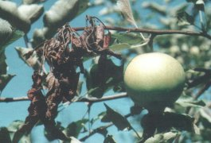
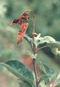
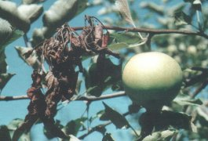

Tűzelhalás
Erwinia amylowora
Az almástermésűek tűzelhalás betegségét az Erwinia amylowora baktérium okozza, Nevét onnan kapta, hogy a hajtásszáradással és elhalással járó tünetei leginkább a tűz okozta perzseléshez hasonlítanak. E kórokozó gazdanövényei az alma, körte, birs, galagonya, berkenye, madárbirs, tűztövis, japánbirs. A csonthéjasokat nem fertőzi meg. A betegség tünetei a gyümölcsfák virágzása után, az intenzív hajtásnövekedési szakaszban hívják fel magukra a figyelmet. A fertőzött - még meg nem fásodott hajtásvégek "pásztorbotszerűen" meghajolnak és a rajta lévő levelekkel együtt megbarnulnak. A levelek azonban nem hullanak le, hanem ott éktelenkedhetnek a következő tavaszon is. A kórokozó a szaporitóanyagal, a fertőzött virágokat, illetőleg rovarokkal, művelő eszközökkel (pl. metszőolló); szél; eső és öntözővíz útján egyaránt terjed. A fertőzés kialakulását a viharral kísért eső elősegíti.
Védekezés
Az almatermésűek tűzelhalás betegsége ellen a megelőzés a leghatékonyabb védekezési eljárás. Fontos szabály, hogy csak növényegészségügyi hatóság által ellenőrzött helyről vásároljunk szaporítóanyagot. A fertőzés terjesztésére alkalmas növényeket ne zugárasoktól vagy piacokon szerezzük be, és óvakodjunk rég áhított, kedvenc fajtáink külföldről, "zsebimport" útján történő behozatalától is. A fák ellenőrzését a sziromhullást követően, majd az intenzív hajtásnövekedések idején célszerű elvégezni, amikor a megbarnult, megfeketedett virágzat, illetve hajtásvégek különösen szembetűnőek. A fenti tünetek észlelését, a fertőzés gyanúját haladéktalanul jelenteni kell a területileg illetékes növényegészségügyi hatóságnak. Továbbiakban a beteg növényi részeket, főként a hajtásokat azonnal el kell távolítani olymódon, hogy a tünetmentes részből is 40-60 cm-t kimetszünk. A kimetszett részeket azonnal el kell égetni vagy mélyen elásva megsemmisíteni. A betegségre fogékony gyümölcstermő növényeink, ültetvényeink kondícióját mindenekelőtt kiegyensúlyozott tápanyagellátással biztosítsuk. Kerüljük a túllzott nitrogén adagolást: Kiemelt jelentőségű agrotechnikai védekezési módszer a szakszerű metszés, a vízhajtások eltávolítása, a permetezőszer behatolását elősegítő koronaforma és az optimális hajtássűrűség kialakítása.
Vegyszeres védekezésre az alábbi növényvédő szerek alkalmazhatók:
| - réztartalmú szerek:
|
 |